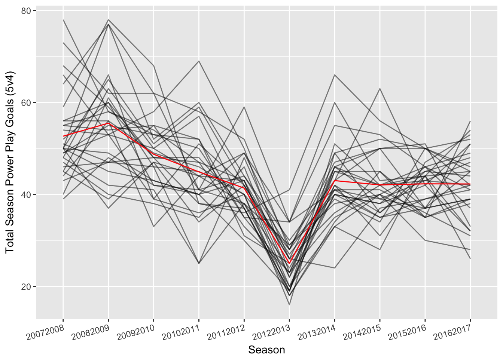
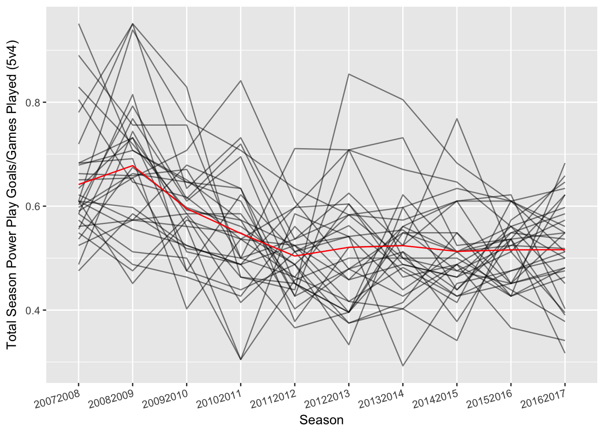
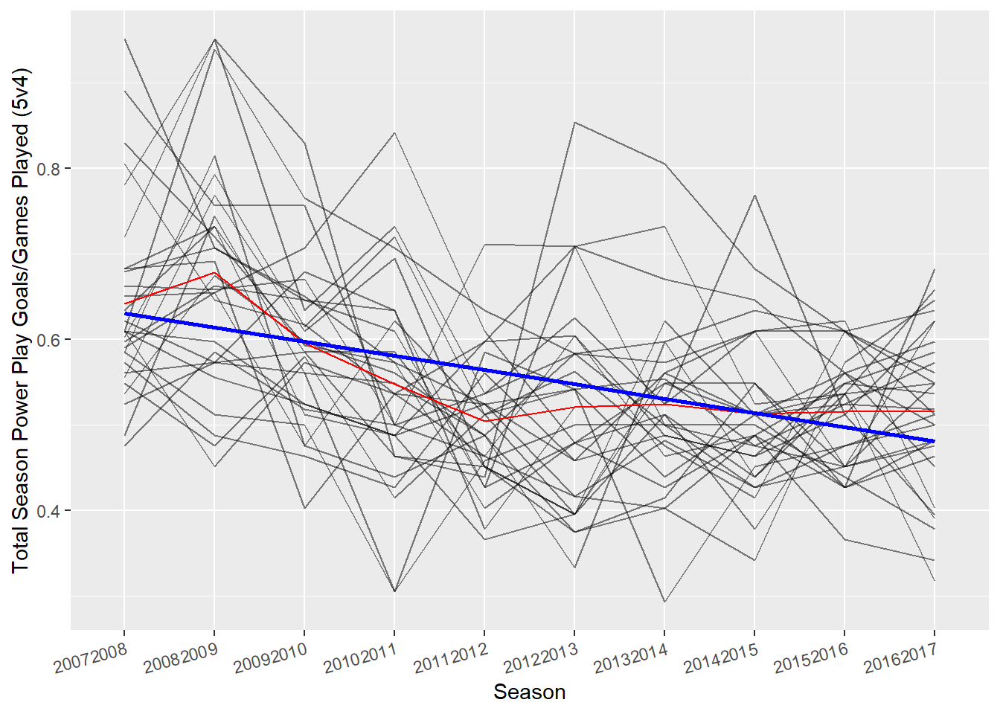

The Last Decade: NHL’s Best and Worst Power Play Teams
Matt Kmiecik
15 May 2017
So you are watching your favorite NHL team and they finally draw a powerplay. Awesome! The ice opens up with the missing player and it shouldn’t be too hard to score…right? As a previous water polo player, I know what it is like to endure the wrath of a furious coach after a missed man advantage opportunity. In my experience, coaches semed convinced that the man-up should lead to a goal 100% of the time. But how important is this seemingly advantageous situation in the NHL?
As a first pass, I analyzed the NHL regular-season over the past ten years (2007-2017) on the standard 5 vs. 4 power play. These data were retrieved via Corsica shortly after the end of the 2017 regular season. The following will detail the analyses in R with steps along the way utilizing the wonderful R packages of ggplot2 (Wickham, 2009) and dplyr (Wickham & Francois, 2016).
First, I loaded the data and made sure to combine the entries of the Atlanta Thrashers and the Winnipeg Jets, as the Thrashers moved to Winnipeg after the 2011 season. Therefore, the Thrashers and the Jets are considered the same team in this analysis.
# Set-up
rm(list=ls()) # Clear workspace
# Load packages
library(ggplot2); library(dplyr); library(plotly); library(RCurl)
# Step 1: Load data
data5v4 <- read.table(text = getURL("https://raw.githubusercontent.com/mkmiecik14/mkmiecik14.github.io/master/data/corsicaData_5v4.csv"),
sep = ',',
header = T)
# Step 2: Clean up the data a little bit
# ATL moved to WPG for 2011-2012 season
data5v4$Team <- plyr::revalue(data5v4$Team, c(ATL = 'ATL.WPG', WPG = 'ATL.WPG'))Next, I plotted the global trend of total regular-season power play goals for each of the 30 NHL teams over the last decade.
# Step 2a: Look at power play goals 5v4 for every team in the past
ggplot(data5v4, aes(factor(Season), GF, group = 1)) +
geom_line(aes(group = factor(Team)), alpha = 1/2) +
geom_line(stat = 'summary', fun.y = 'mean', colour = 'red') +
xlab('Season') +
ylab('Total Season Power Play Goals (5v4)') +
theme(axis.text.x = element_text(angle = 15, hjust = 1))
In this above plot, each team is a grey line, while the average total power play goals for each season is plotted in the red trend line. However, we see that this doesn’t control for the shortened lockout season that occurred in 2012-2013. Let’s control for this by dividing the total power play goals (GF) by the total games played (GP) each season.
# Step 2b: Control for games played due to partial lockout season (2012-2013)
ggplot(data5v4, aes(factor(Season), GF/GP, group = 1)) +
geom_line(aes(group = factor(Team)), alpha = 1/2) +
geom_line(stat = 'summary', fun.y = 'mean', colour = 'red') +
xlab('Season') +
ylab('Total Season Power Play Goals/Games Played (5v4)') +
theme(axis.text.x = element_text(angle = 15, hjust = 1))
We now see each team’s power play performance controlled for the games played that season. What is interesting about this above plot is the seemingly decrease in power play goals across time. Let’s model this with a linear regression that predicts the total season power play goals controlled for games played as a function of time/season.
# Step 3a: Linearly model this negative relationship between
# power play goals/game and season
mod <- lm((GF/GP) ~ factor(Season), data = data5v4)
summary(mod) # Very significant negative trend over time>
> Call:
> lm(formula = (GF/GP) ~ factor(Season), data = data5v4)
>
> Residuals:
> Min 1Q Median 3Q Max
> -0.24268 -0.06463 -0.00878 0.05407 0.33333
>
> Coefficients:
> Estimate Std. Error t value Pr(>|t|)
> (Intercept) 0.64176 0.01890 33.953 < 2e-16 ***
> factor(Season)20082009 0.03628 0.02673 1.357 0.175726
> factor(Season)20092010 -0.04644 0.02673 -1.737 0.083394 .
> factor(Season)20102011 -0.09420 0.02673 -3.524 0.000494 ***
> factor(Season)20112012 -0.13776 0.02673 -5.154 4.73e-07 ***
> factor(Season)20122013 -0.12093 0.02673 -4.524 8.86e-06 ***
> factor(Season)20132014 -0.11779 0.02673 -4.407 1.48e-05 ***
> factor(Season)20142015 -0.12875 0.02673 -4.817 2.36e-06 ***
> factor(Season)20152016 -0.12591 0.02673 -4.710 3.84e-06 ***
> factor(Season)20162017 -0.12555 0.02673 -4.697 4.08e-06 ***
> ---
> Signif. codes: 0 '***' 0.001 '**' 0.01 '*' 0.05 '.' 0.1 ' ' 1
>
> Residual standard error: 0.1035 on 290 degrees of freedom
> Multiple R-squared: 0.2464, Adjusted R-squared: 0.223
> F-statistic: 10.54 on 9 and 290 DF, p-value: 4.082e-14As we can see from the regression model and coefficients, power play goals are decreasing with each successive season. Here is a plot of this negative trend in blue.
# Step 3b: Plot this linear trend over time
ggplot(data5v4, aes(factor(Season), GF/GP, group = 1)) +
geom_line(aes(group = factor(Team)), alpha = 1/2) +
geom_line(stat = 'summary', fun.y = 'mean', colour = 'red') +
xlab('Season') +
ylab('Total Season Power Play Goals/Games Played (5v4)') +
stat_smooth(method = 'lm', col = 'blue', se = F) +
theme(axis.text.x = element_text(angle = 15, hjust = 1))
I then wondered which teams, despite this decrease in power play goals over time, had the best or worst power play across the last decade? To remove this negative trend over time, I extracted the residuals from the model. The residuals are simply the distance from the blue line (the predicted power play goals over time) to each team’s grey line (total power play goals/games played for each year).
# Step 4a: Remove this linear trend and focus on residuals
# This will examine teams' performance after controlling for this decrease in
# powerplay goals in the last decade
data5v4$rel_ppg <- resid(mod)Next, I averaged these residuals for each individual team over ten years and ran one-sample t-tests to see the teams that significantly deviated from the average.
# Step 4b: Average the residuals for each team over the past decade. Then,
# perform a one-sample t-test (i.e., from zero) to see teams that were above
# or below the average power play goals/game despite the decrease in
# power play goals in the last decade
bestPP <- data5v4 %>%
group_by(Team) %>%
summarise_each(funs(mean = mean,
sd = sd,
sem = sd(.)/sqrt(n()),
tpval = t.test(.)$p.value),
rel_ppg) %>%
mutate(sig = tpval < .05)
print(bestPP)> # A tibble: 30 × 6
> Team mean sd sem tpval sig
> <fctr> <dbl> <dbl> <dbl> <dbl> <lgl>
> 1 ANA 0.0295984571 0.08135082 0.02572539 0.279566941 FALSE
> 2 ARI -0.0556384254 0.07765992 0.02455822 0.049721680 TRUE
> 3 ATL.WPG -0.0456169710 0.07345335 0.02322799 0.081136809 FALSE
> 4 BOS -0.0249868897 0.10215940 0.03230564 0.459086769 FALSE
> 5 BUF -0.0230334119 0.09867466 0.03120367 0.479219695 FALSE
> 6 CAR -0.0102398256 0.08962689 0.02834251 0.726219579 FALSE
> 7 CBJ -0.0531692896 0.08913087 0.02818566 0.091863618 FALSE
> 8 CGY -0.0111667945 0.06042159 0.01910699 0.573283741 FALSE
> 9 CHI -0.0007603766 0.08355941 0.02642381 0.977671085 FALSE
> 10 COL -0.0782671517 0.06691173 0.02115935 0.004928647 TRUE
> # ... with 20 more rowsFinally, I plotted these results. Teams that have positive averages that are different from zero are teams that are above average in the power play, despite the decrease in power play goals scored in the last decade. The teams with negative residual averages are the opposite and are below average in the power play. Error bars represent the standard error of the mean.
# Step 4c: Plot the average residuals, their standard error of the mean,
# and color based on if significantly different from 0 (i.e., average PPG/Game)
# -- To get y.axis bold conditional -- #
bestPPSort <- arrange(bestPP, mean)
axisFace <- ifelse(bestPPSort$sig == T,'bold', 'plain')
# -- To get y.axis bold conditional -- #
# -- To get shading conditional -- #
above <- bestPP %>% filter(mean > 0, sig == TRUE) %>% arrange(mean)
average <- bestPP %>% filter(sig == FALSE)
below <- bestPP %>% filter(mean < 0, sig == TRUE) %>% arrange(mean)
# -- To get shading conditional -- #
ggplot(bestPP, aes(mean, reorder(Team, mean), colour = sig)) +
geom_errorbarh(aes(xmin = mean - sem, xmax = mean + sem)) +
geom_point(size = 2) +
scale_x_continuous(limits = (c(-.2, .2))) +
scale_color_manual(values = c('grey', 'black'),
guide = guide_legend(reverse = T,
title = 'Above/Below Average',
title.position = 'top')) +
labs(x = 'Mean Power Play Goals/Games Played (Residuals)',
y = 'NHL Team',
title = 'NHL 5v4 Power Play Team Performance 2007-2017',
caption = 'Error bars are SEM') +
theme_minimal() +
theme(axis.text.y = element_text(face = axisFace),
plot.title = element_text(hjust = 0.5),
legend.position = 'bottom',
legend.key = element_rect(colour = "transparent", fill = "white"),
legend.key.width = unit(1, 'in'),
legend.key.height = unit(.5, 'in'),
legend.title.align = .5,
axis.title.x = element_text(vjust = -1)) +
annotate('rect',
xmin = -Inf,
xmax = Inf,
ymax = above$Team[nrow(above)],
ymin = above$Team[1],
fill = '#33a02c',
alpha = 1/3) +
annotate('rect',
xmin = -Inf,
xmax = Inf,
ymax = below$Team[nrow(below)],
ymin = below$Team[1],
fill = '#e31a1c',
alpha = 1/3) +
annotate('text', x = -.1, y = above$Team[3], label = 'Best Teams') +
annotate('text', x = .1, y = below$Team[4], label = 'Worst Teams')
As we can see from this plot, the top power play teams in the past decade have been the Washington Capitals, Philadelphia Flyers, Detroit Red Wings, San Jose Sharks, and Pittsburgh Penguins. Meanwhile, the worst power play teams have been the New York Islanders, Phoenix Coyotes, Nashville Predators, New York Rangers, New Jersey Devils, Colorado Avalanche, and Florida Panthers.
Interestingly, only 5 different teams have won the Stanley Cup in this ten year span. Of the top power play teams from this analysis, only the Red Wings and the Penguins have won the Stanley Cup, while the Blackhawks, the Kings, the Bruins all had average regular-season power plays. It is unclear how regular-season power play performance relates to Stanley Cup wins; however, this analysis demonstrated 3 key findings for this last decade of hockey (2007 – 2017):
- League-wide total power play goals per season have decreased
- Top power play teams are:
- Washington Capitals
- Philadelphia Flyers
- Detroit Red Wings
- San Jose Sharks
- Pittsburgh Penguins
- Worst power play teams are:
- New York Islanders
- Phoenix Coyotes
- Nashville Predators
- New York Rangers
- New Jersey Devils
- Colorado Avalanche
- Florida Panthers
Acknowledgments:
This analysis was inspired by Part III of ggplot2: Elegant Graphics for Data Analysis by Hadley Wickham.
References:
Wickham, H. 2009. ggplot2: Elegant Graphics for Data Analysis. Book. Springer-Verlag New York. http://ggplot2.org.
Wickham, H., and R. Francois. 2016. dplyr: A Grammar of Data Manipulation. https://CRAN.R-project.org/package=dplyr.